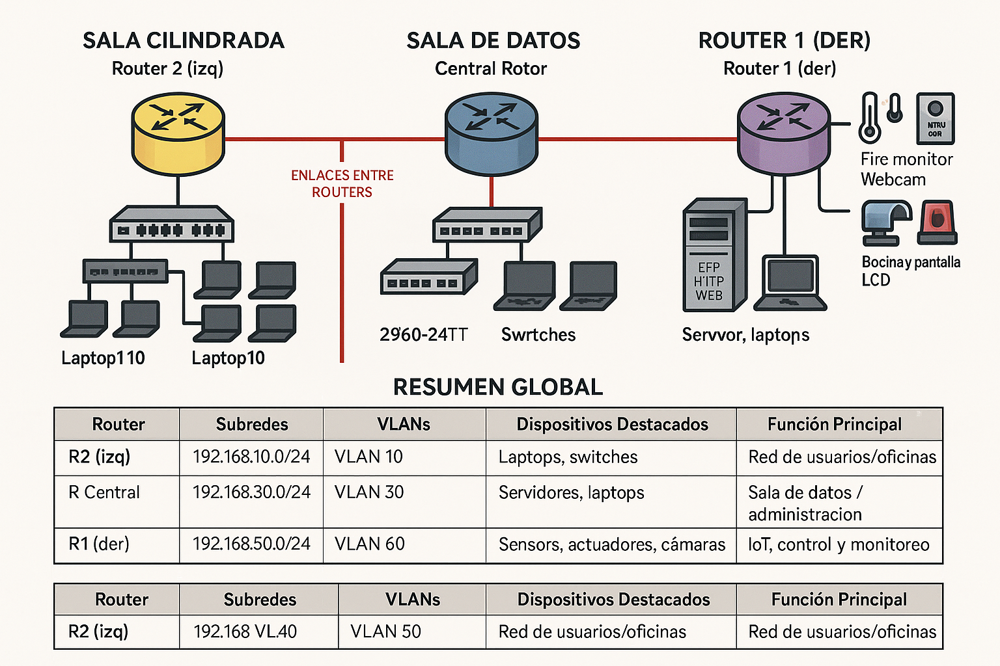
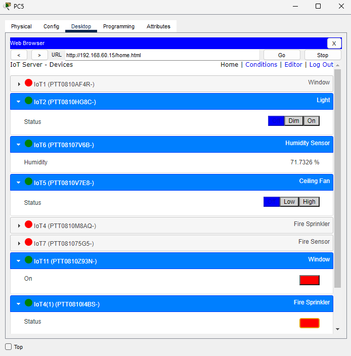
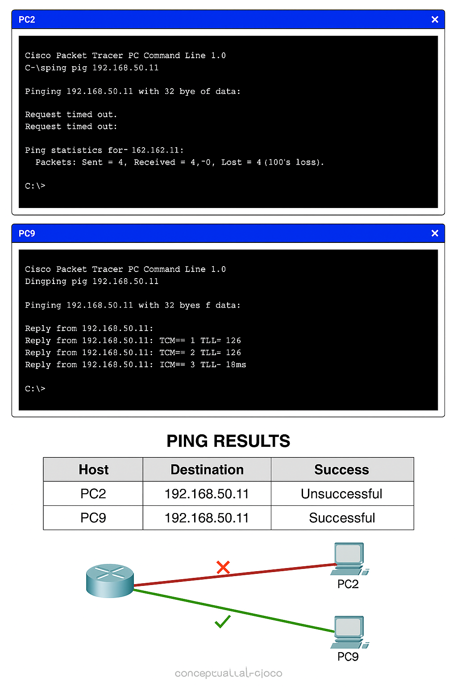

Red de Servicios Municipales Inteligentes
Topología Usada

Tabla Detallada de la Topología
| Router / Sala |
Subredes y VLANs |
Dispositivos Conectados |
Uso de la Red |
| üü® Router 2 ‚Äì SALA CILINDRADA |
- 192.168.10.0/24 → VLAN 10
- 192.168.20.0/24 → VLAN 20 |
- Laptop1 a Laptop10
- Switch 2960-24TT y otros switches |
- Red de usuarios generales
- VLAN 10: Subgrupo de usuarios
- VLAN 20: Administrativos o invitados |
| üü¶ Router Central ‚Äì SALA DE DATOS |
- 192.168.30.0/24 → VLAN 30
- 192.168.40.0/24 → VLAN 40 |
- Servidor (FTP, HTTP, WEB)
- Switches 2960-24TT
- Varias laptops y PCs |
- Servicios de red (FTP, Web, etc.)
- VLAN 30: Administración
- VLAN 40: Usuarios |
| üü™ Router 1 ‚Äì SALA DE CONTROL |
- 192.168.50.0/24 → VLAN 50
- 192.168.60.0/24 → VLAN 60 |
- Cámaras IP, sensores, sirenas, lámparas
- Dispositivos IoT: sensor temp/humo, fire monitor, webcam, LCD, Arduino |
- Automatización y videovigilancia
- VLAN 50: Sensores y cámaras
- VLAN 60: Alarmas y actuadores |
üî¥ Enlaces Entre Routers
| Conexión |
Tipo |
Descripción |
| Router 2 ↔ Router Central |
Enlace WAN (Rojo) |
Comunican SALA CILINDRADA con SALA DE DATOS |
| Router 1 ↔ Router Central |
Enlace WAN (Rojo) |
Comunican SALA DE CONTROL con SALA DE DATOS |
| Router 2 ↔ Router 1 |
Enlace indirecto |
A través del router central, posible túnel IPv6 sobre IPv4 |

Descripción del Proyecto
Este proyecto implementado en Cisco Packet Tracer representa una red de telecomunicaciones que conecta tres sedes municipales:
Sede Central, Sede Seguridad y Sede Ciudadana. Cada una de estas sedes cumple funciones específicas
orientadas a servicios esenciales para la ciudadanía, la administración pública y la seguridad.
La infraestructura está compuesta por routers, switches, VLANs, servidores y dispositivos finales. Se ha implementado túneles, VPN,
IPsec y ACLs para garantizar la seguridad de la red.
Además, se incluyen tecnologías como:
- VLANs por departamentos: segmentación de redes para seguridad y eficiencia.
- Servidor FTP, HTTP, DNS y video streaming: acceso a servicios multimedia y administrativos.
- IoT y videovigilancia: mediante cámaras IP y sensores simulados en la sede de seguridad.
- Enlaces WAN simulados: entre las sedes, con políticas de cifrado para la transmisión segura de datos.
Esta red cumple los objetivos clave de una ciudad inteligente: garantizar la comunicación interna del gobierno,
proteger a los ciudadanos, monitorizar el entorno urbano y ofrecer servicios digitales de calidad.
Demostración del Servicio FTP
Para demostrar el funcionamiento del servicio FTP, desde el Command Prompt del PC se utilizan los comandos put y get para subir y descargar archivos:
- put: Subir un archivo al servidor.
- get: Descargar un archivo del servidor.
Si ambos comandos funcionan correctamente, el servicio FTP está operando según lo esperado.
En esta imagen se ve cómo se ha añadido un archivo llamado Texto.txt al servidor.
En esta imagen se visualiza la correcta descarga del archivo Texto.txt desde otro PC.
Demostración del Servicio TFTP
Para usar este servicio se emplea el siguiente comando desde un router para transferir su configuración al servidor TFTP:
Copy running-config tftp:
Address or name of remote host []? 192.168.1.2
Destination filename [netizzan-confg]?
Writing running-config....!!
[OK - 718 bytes]
718 bytes copied in 3.252 secs (220 bytes/sec)
Esto demuestra que el servidor ha sido capaz de recibir la configuración del router correctamente.

Conceptos y Configuraciones Aplicadas a Este Proyecto
Enrutamiento Dinámico
¿Por qué el protocolo de enrutamiento dinámico EIGRP?
Protocolo Tipo Uso recomendado Ventajas principales Limitaciones
EIGRP Vector de distancia avanzado Redes medianas a grandes Cisco Rápida convergencia, eficiente, admite VLSM, métricas compuestas Solo Cisco (versión limitada abierta)
EIGRP - Características, Ventajas y Desventajas
¿Qué es EIGRP?
EIGRP (Enhanced Interior Gateway Routing Protocol) es un protocolo de enrutamiento avanzado desarrollado por Cisco, diseñado para operar dentro de un sistema autónomo (IGP). Combina lo mejor de los protocolos de vector distancia y de estado de enlace, ofreciendo rápida convergencia, eficiencia en el uso de recursos y escalabilidad.
Características de EIGRP
Característica Descripción
Tipo de protocolo Híbrido (Vector distancia + Estado de enlace)
Algoritmo de enrutamiento DUAL (Diffusing Update Algorithm)
Métrica Basada en ancho de banda, retardo, carga y confiabilidad
Transporte RTP (Reliable Transport Protocol)
Soporte de protocolos IPv4 e IPv6
Soporte de VLSM y CIDR ✅ Sí
Balanceo de carga ✅ Sí (igual y desigual)
Rutas de respaldo ✅ Feasible successors
Tipo de actualizaciones Parciales y triggered (no periódicas)
Detección de bucles ✅ Muy eficiente (gracias a DUAL)
Ventajas de EIGRP
Ventaja Descripción
Convergencia rápida DUAL permite encontrar nuevas rutas rápidamente
Uso eficiente del ancho de banda Solo envía actualizaciones cuando hay cambios
Alta escalabilidad Ideal para redes grandes
Soporte de múltiples protocolos Compatible con IPv4, IPv6 y más
Balanceo de carga desigual Permite usar rutas con diferente métrica
Rutas de respaldo inmediatas No es necesario recalcular todo cuando una ruta falla
Desventajas de EIGRP
Desventaja Descripción
Propietario de Cisco No todos los fabricantes lo soportan
Menos estandarizado que OSPF Puede generar problemas en entornos mixtos
Complejidad relativa Más complejo que RIP en redes pequeñas
Comparación entre IGRP y EIGRP
Característica IGRP EIGRP
Desarrollado por Cisco Cisco
Tipo de protocolo Vector distancia Híbrido
Algoritmo de enrutamiento Vector distancia clásico DUAL
Métrica utilizada BW, delay, carga, conf. Igual
Convergencia Lenta Rápida
Soporta VLSM/CIDR ❌ No ✅ Sí
Soporta IPv6 ❌ No ✅ Sí
Balanceo carga desigual ❌ No ✅ Sí
Rutas de respaldo ❌ No ✅ Sí
Transporte Ninguno RTP
Manejo de bucles Deficiente Excelente
Estado actual Obsoleto En uso
Configuración básica de EIGRP
Router5:
interface g0/0.10
encapsulation dot1Q 10
ip address 192.168.10.1 255.255.255.0
no shutdown
interface g0/1
ip address 192.168.100.1 255.255.255.252
no shutdown
router eigrp 1
network 192.168.10.0
network 192.168.100.0
no auto-summary
Router6:
interface g0/0.20
encapsulation dot1Q 20
ip address 192.168.20.1 255.255.255.0
no shutdown
interface g0/1
ip address 192.168.100.2 255.255.255.252
no shutdown
router eigrp 1
network 192.168.20.0
network 192.168.100.0
no auto-summary
Switches:
interface range fa0/1 - 24
switchport mode access
switchport access vlan 10
spanning-tree portfast
interface fa0/x
switchport mode trunk
PCs:
PC2/PC3: IP 192.168.10.X | Gateway 192.168.10.1
PC4/PC5: IP 192.168.20.X | Gateway 192.168.20.1
Verificación con ping, show ip route y show ip protocols.
Seguridad de la Red
IPv6 y Dual Stack
Para los servicios multimedia se ha aplicado IPv6 mediante un módulo adicional y configuración dual stack, permitiendo coexistencia de IPv4 e IPv6.
Segmentación y ACLs
Se ha restringido el acceso desde la sede ciudadana a los equipos encargados de las cámaras y dispositivos IoT mediante ACLs extendidas.
ACL Extendida:
Nivel de filtrado: IP origen/destino, protocolos y puertos
Protocolos: IP, TCP, UDP, ICMP
Rango: 100–199 / 2000–2699
Ubicación recomendada: cerca del origen
Uso: Controlar acceso a servicios como HTTP, FTP, SSH
VPN y Túneles IPsec
Para proteger el tráfico entre las redes internas del ayuntamiento se han creado túneles IPsec entre:
- 192.168.30.0
- 192.168.40.0
- 192.168.50.0
- 192.168.60.0
Esto garantiza comunicaciones privadas y seguras entre sedes.
Comprobación de Incorporación de los Servicios IoT
Validación funcional de sensores, actuadores y sistemas inteligentes implementados
Esta sección muestra pruebas visuales del funcionamiento correcto de los dispositivos IoT dentro de la red. Verificar la incorporación de estos servicios es esencial para garantizar que los sistemas inteligentes (como sensores de fuego, control de humedad, cámaras de vigilancia y actuadores como ventiladores o rociadores) operan en conjunto de forma efectiva.
La utilidad de esta comprobación radica en que permite confirmar el cumplimiento de los objetivos clave de una ciudad inteligente: seguridad, eficiencia energética, monitoreo ambiental y respuesta automática ante eventos. Además, asegura que los servicios estén correctamente conectados a la infraestructura de red y gestionados a través del servidor IoT.
1. Inicio de sesión en el servidor IoT con cámara activada:

2. Página de inicio sin iniciar sesión:

3. Panel de control mostrando la actividad de sensores y actuadores IoT:

4. Servidor Web IoT desplegando múltiples dispositivos y sus estados:

Demostración del Empleo de ACLs y VPN
En esta sección se presenta una comprobación funcional del sistema de control de acceso y túneles seguros configurados
en la red. Como los usuarios de la sede ciudadana no tienen autorización para acceder a los datos del ayuntamiento,
se ha configurado una ACL extendida que impide su comunicación directa. Para garantizar acceso seguro, se ha creado
una VPN con cifrado IPsec y se ha implementado un crypto map que asocia los parámetros de seguridad
a la interfaz correspondiente.
Las siguientes imágenes muestran la prueba de conectividad mediante comandos ping desde dos equipos
distintos. Uno de ellos logra acceder gracias a la VPN y políticas permitidas; el otro es rechazado por las ACLs.
